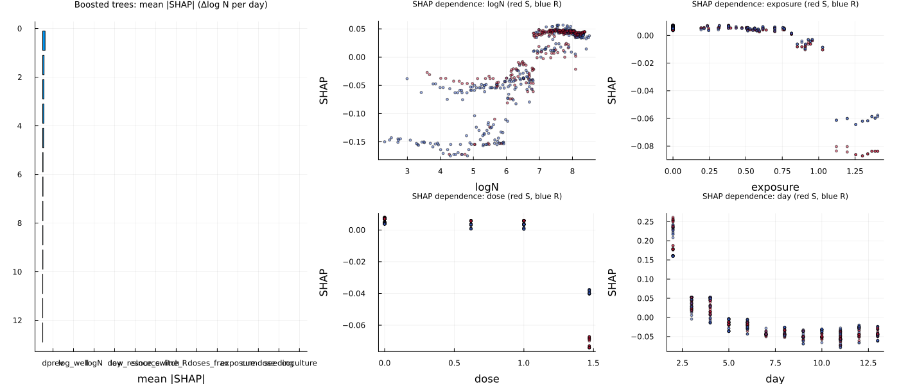

Permutation importance is the rise in one-step RMSE (log scale) when a feature is shuffled: on training rows (in-sample) and on the held-out validation rows. TreeSHAP is exact for the boosted trees.
| feature | trees_train | trees_validation | mlp_train | mlp_validation | trees_mean_abs_shap |
|---|---|---|---|---|---|
| dprev | 0.1291 | 0.05459 | 0.1015 | 0.05191 | 0.1139 |
| log_well | 0.1008 | 0.1043 | 0.0689 | 0.003312 | 0.06529 |
| logN | 0.04524 | 0.01228 | 0.05529 | 0.007537 | 0.0563 |
| day | 0.04853 | 0.01633 | 0.08887 | 0.01617 | 0.0548 |
| low_resource | 0.02421 | 0 | 0.2438 | 0 | 0.04284 |
| since_switch | 0.009308 | 0.006018 | 0.02483 | -0.003633 | 0.01654 |
| line_R | 0.008512 | -0.001102 | 0.149 | -0.02598 | 0.01458 |
| dose | 0.004097 | 0 | 0.01504 | 0 | 0.009875 |
| s_frac | 0.002658 | 0.0002161 | 0.083 | -0.001983 | 0.009671 |
| exposure | 0.003929 | 1.55e-06 | 0.02382 | -0.009114 | 0.009633 |
| cumdose | 0.0001988 | 0.0001714 | 0.007742 | -0.001501 | 0.0007229 |
| seeding | 1.038e-05 | -2.249e-05 | 0.0008971 | -0.0002116 | 0.0004221 |
| coculture | 0.0001224 | 0 | 0.00967 | 0 | 0.0002523 |

Mean |∂kill/∂input| × sd(input) over the states the fitted model visits; for line, the mean |killR − killS| at the same state. Averaged over ensemble members.
| input | mean | sd |
|---|---|---|
| exposure v | 0.1297 | 0.017 |
| density ρ | 0.08365 | 0.03225 |
| line (S vs R) | 0.2494 | 0.03599 |
Each variant removes one NN input and is retrained from scratch. Δ weighted SSE on training (a χ², so ~2 per unit of log-likelihood) is the in-sample cost; validation RMSE is the out-of-sample cost.
| variant | weighted_sse | val_treated_co_rmse | delta_sse |
|---|---|---|---|
| full | 193.5 | 0.4066 | 0 |
| without density ρ | 205.3 | 0.4216 | 11.85 |
| without line | 250.4 | 0.3909 | 56.91 |